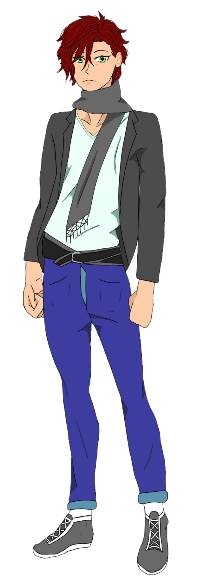

Emmel :

Nous vous avons proposé de choisir un nom pour le personnage ci-dessus mais j'aimerais vous la présenter en tant qu'Emmel. Je vais à présent vous raconter son histoire. C'était une fille plutôt solitaire qui aimait se plonger dans la lecture et voir des animés. Elle rêvait de vivre les aventures de ses héros préférés jusqu'au jour où elle rencontra Gabriel. Il lui permit de réaliser ses souhaits et d'enfin vivre ses propres aventures. Dans notre jeu, nous vous permettons d'accéder à une de ses aventures.
Goet : 
Pour ce personnage nous vous avons également proposé de lui donner un nom, mais en réalité il se nomme Goet. Goet est un passionné d'art et de culture. Il prend plaisir à découvrir les différentes civilisations et modes de vie. Mais malheureusement, il fait principalement ses découvertes sur internet ou grâce aux livres. Il a pu rencontré Gabriel sur un réseau social. Ce réseau permettait à différentes personnes de parler de cultures. C'est ainsi que Gabriel invita Goet pour un voyage rempli d'aventures. Vous avez pu le suivre dans notre jeu.
Gabriel :
Gabriel est un personnage qui est sans cesse attiré par de nombreuses aventures. Dès ses 6 mois, ses parents sont partis avec lui pour faire le tour du monde. Il a grandi en découvrant sans cesse les cultures de nombreux pays. Depuis il veut partagetr avec les autres sa passion.
Personnages secondaires :
Dessins réalisés par Aurély Dalleau.
Dessins réalisés par Albane Paquet.